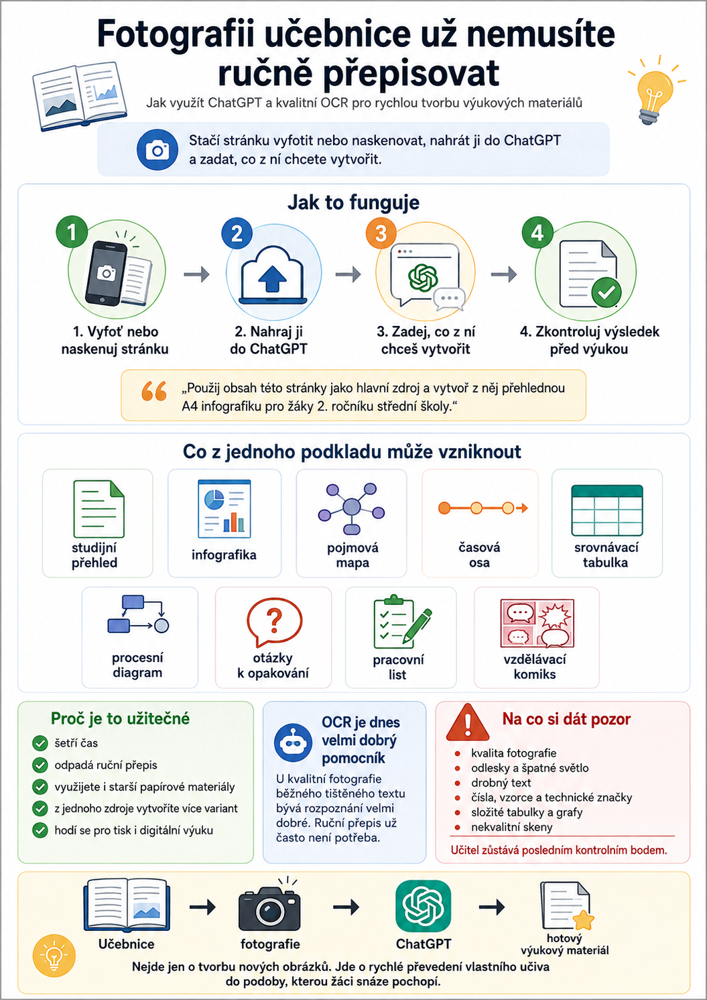

Máte učivo jen v papírové učebnici? Nemusíte ho nejprve ručně přepisovat do počítače.
Stačí stránku vyfotit mobilem nebo naskenovat, nahrát ji do ChatGPT a zadat, co z ní chcete vytvořit.
Například:

ChatGPT může z jednoho takového podkladu připravit například:
- studijní přehled,
- infografiku,
- pojmovou mapu,
- časovou osu,
- srovnávací tabulku,
- procesní diagram,
- otázky k opakování,
- pracovní list,
- nebo vzdělávací komiks.
OCR už není slabé místo jako dříve
OCR neboli optické rozpoznávání textu bývalo při práci s fotografiemi učebnic poměrně nespolehlivé. Často bylo nutné rozpoznaný text opravovat nebo celý dokument nejprve převést pomocí specializovaného programu.
Dnešní multimodální AI dokáže kvalitní fotografie běžného tištěného textu zpracovat velmi dobře.
V praxi to znamená, že u běžné stránky učebnice často odpadá celý mezikrok ručního přepisování textu.
A to může učiteli ušetřit překvapivě hodně času.
učebnice → fotografie → ChatGPT → hotový výukový materiál
Z jednoho obrázku můžete pokračovat dál
Velkou výhodou je, že práce nemusí skončit prvním výsledkem.
Po vytvoření materiálu můžete jednoduše pokračovat:
- „Zkrať text na polovinu.“
- „Převeď tento obsah do pojmové mapy.“
- „Vytvoř z něj studijní tahák na A4.“
- „Uprav materiál pro slabší žáky.“
- „Přidej jednoduché vysvětlení odborných pojmů.“
- „Vytvoř z tohoto učiva pět kontrolních otázek.“
- „Teď z něj vytvoř vizuální infografiku A4 na šířku.“
Nemusíte pokaždé začínat znovu. ChatGPT už v konverzaci pracuje s nahraným podkladem a můžete společně postupně hledat nejlepší podobu výsledného materiálu.
Na kvalitě fotografie pořád záleží
Ani dnešní AI není kouzelník na rozmazané fotky focené přes půl třídy.
Pro nejlepší výsledek se vyplatí:
- fotografovat stránku co nejvíce kolmo,
- zajistit dostatek světla,
- vyhnout se odleskům,
- zachytit celou stránku,
- používat dostatečné rozlišení,
- u velmi hustého textu raději vyfotit stránku po částech.
Větší pozornost je stále potřeba věnovat číslům, matematickým a odborným vzorcům, technickým značkám, složitým tabulkám, grafům nebo velmi drobnému textu.
Proto zůstává poslední krok stejný jako u každého materiálu vytvořeného pomocí AI:
rychlá kontrola učitelem před použitím ve výuce.
Proč je to pro učitele tak důležité?
Protože velká část školních materiálů stále neleží v dokonale připravených digitálních dokumentech.
Máme je v:
učebnicích, starších pracovních listech, skriptech, vytištěných materiálech, metodických příručkách nebo vlastních šanonech.
A právě tyto zdroje můžeme nyní mnohem snadněji převádět do moderních digitálních a vizuálních materiálů.
Nejde tedy jen o to, že ChatGPT umí něco nového vytvořit.
Dokáže nám pomoci znovu využít materiály, které už máme.
A pro běžnou učitelskou praxi je to možná jedna z nejužitečnějších funkcí vůbec.